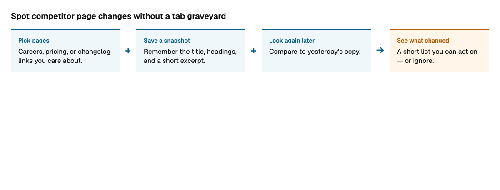
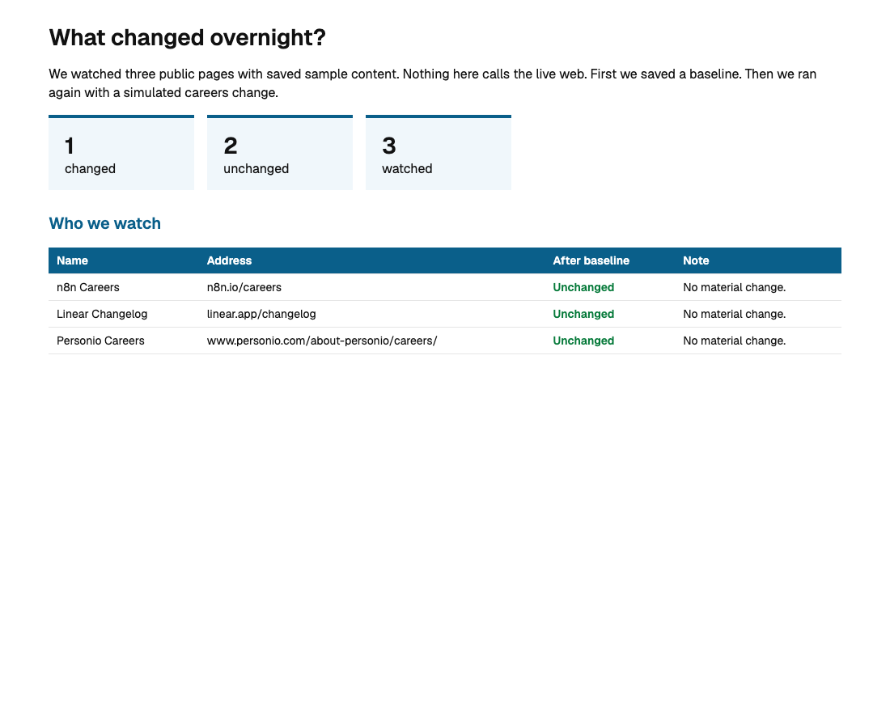
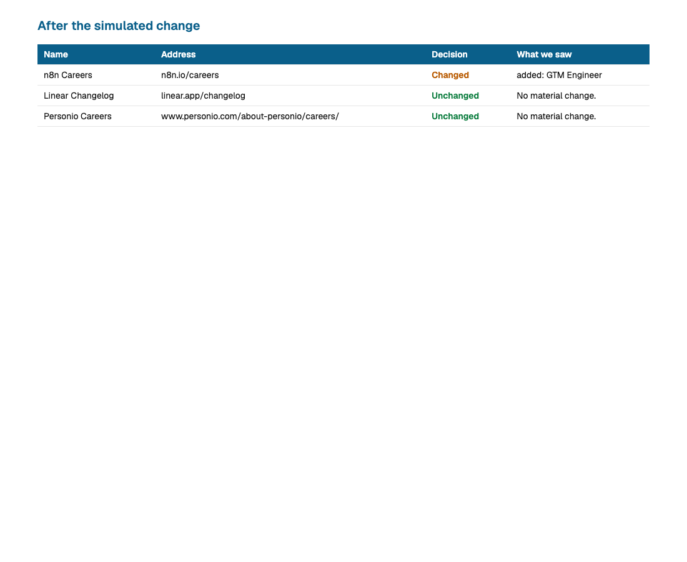

We watched three pages with saved sample content. Nothing here calls the live web. First we saved a baseline. A second look found no change. Then we simulated a careers update so the desk could show a real “changed” row.
In this run, 1 page changed and 2 stayed the same. The desk writes a short report you can open, share, or feed to a weekday morning check.



Run the lab again with python experiments.py. For live pages later, put real links in targets.yml and use python watch.py --live.